WEBSITE LESSON 12 · LECTURE 11 · CHAPTER 6-3
E1/E2消除、立体化学与取代竞争
Elimination mechanisms, stereochemistry and substitution competition
一、知识体系：先分路径，再判产物
本讲把上一课的亲核取代扩展到消除反应（elimination）。先确定底物、试剂与介质支持哪条路径，再在该路径中寻找可消除的β-H、允许的构象和产物比例。网站第12课对应课件Lecture 11 / Chapter 6-3，共46页。
| 层次 | 核心问题 | 对应知识 |
|---|---|---|
| 反应中心 | X连在哪个碳？邻碳上有什么H？ | α/β位置、伯/仲/叔底物 |
| 反应路径 | 先电离还是一步协同？ | E1、E2、SN1、SN2 |
| 空间要求 | C–H与C–X如何排列？ | anti共平面、环己烷反式二轴 |
| 选择性 | 在哪个位置成双键？得到哪种构型？ | Zaitsev、位阻、E/Z、立体专一性 |
| 证据 | 速率式、重排与产物怎样互相支持？ | 动力学、共同中间体、竞争路径 |
阅读顺序：第3页复习SN1/SN2；4–17页E1；18–31页E2及立体化学；32–42页比较与竞争；43–46页例题和作业。正文按这个顺序展开，并在环己烷与定量部分补充明确标注的推导。
二、α、β与脱卤化氢：先标原子
α碳是直接连离去基团X的碳；与α碳相连的是β碳，β碳上的氢叫β-H。普通脱卤化氢在Cα与Cβ之间形成双键，净变化为移走一个β-H和一个X。
这里B⁻是碱，BH是其共轭酸；若碱是中性醇ROH，则去质子化后得到ROH₂⁺。脱卤化氢（dehydrohalogenation）描述净脱去H与X的组成关系。画机理时按实际电子转移写物种，尤其注意中性醇与烷氧负离子的电荷差别。
枚举方法：圈出Cα → 找全部相邻Cβ → 标出各β-H → 合并由分子对称性得到的等价位置 → 为每种连接方式继续检查E/Z。甲基卤只有α碳，缺少普通β消除所需的邻碳；叔卤虽适合消除，也需存在可达的β-H。
三、E1：电离后，捕获与去质子化分流
E1（unimolecular elimination，单分子消除）的基本步骤是：① C–X异裂形成碳正离子和X⁻；② 碱取走相邻β-H，C–H键的电子对形成π键。简单模型中第一步慢，第二步快。第6页图中的弯箭头分别从C–X键、碱的孤对以及C–H键出发。
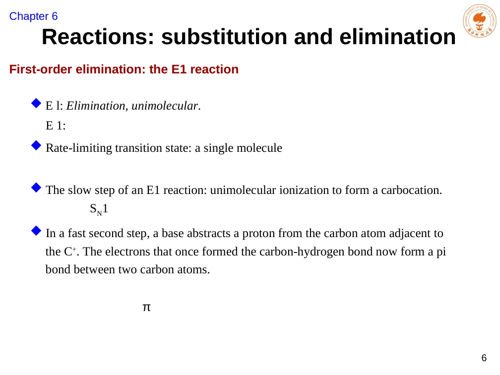
vE1是该模型中的消除速率，单位mol·L⁻¹·s⁻¹；[RX]为底物浓度，单位mol·L⁻¹；kE1为一级速率常数，单位s⁻¹。此式适用于电离控速、后续分支比例基本恒定的条件。溶剂、离去基团和正离子稳定性会改变速率常数。
溴代环己烷在甲醇中电离后，甲醇作碱可给环己烯；作亲核体则先形成质子化醚，再去质子化得到甲氧基环己烷。叔丁基溴在乙醇中的共同正离子也有两条去向：E1给2-甲基丙烯，SN1给乙基叔丁基醚。写“共同碳正离子→两条支路”能把混合产物解释清楚。
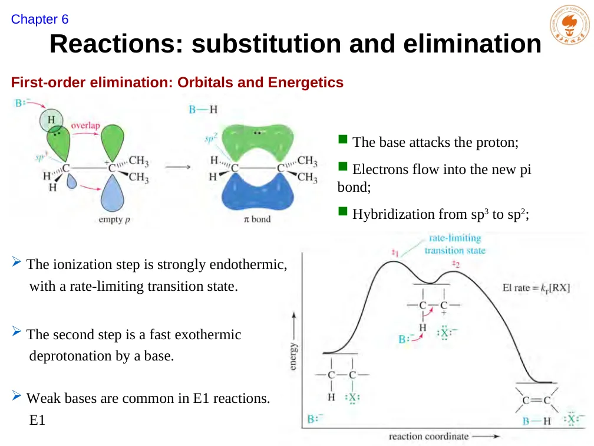
能量图中两步之间的谷对应中间体；峰对应过渡态。E1中碳正离子的空p轨道为后续π键形成提供轨道，先形成的中间体也给重排留下机会。常见有利条件是能形成较稳定正离子的底物、较好的离去基团和支持电离的介质。
四、E1重排：先更新碳骨架，再找β-H
碳正离子重排包括1,2-氢迁移和1,2-烷基迁移。迁移基团连同原σ键电子对转移到缺电子中心，正电荷落在原来提供基团的碳上。每画完一步，就重新标Cα和相邻β-H。
课件的3-甲基-2-溴丁烷先产生仲正离子；相邻碳上的氢迁移后形成更稳定的叔正离子。随后去质子化可得2-甲基-2-丁烯或2-甲基-1-丁烯；亲核捕获则进入取代支路。
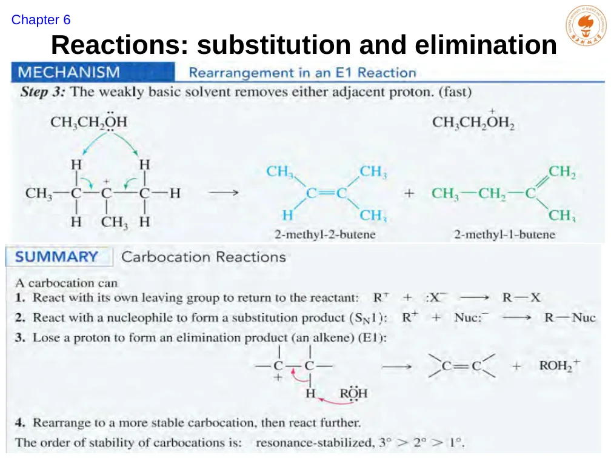
环丁基甲基底物：氢迁移与扩环并行
第14页的环丁基甲基溴在热甲醇中给出四种所示产物。沿氢迁移支路，正电荷移到环碳，得到亚甲基环丁烷和1-甲氧基-1-甲基环丁烷；沿环扩张支路，邻近环内C–C键迁移，四元环变成五元环，得到环戊烯和甲氧基环戊烷。
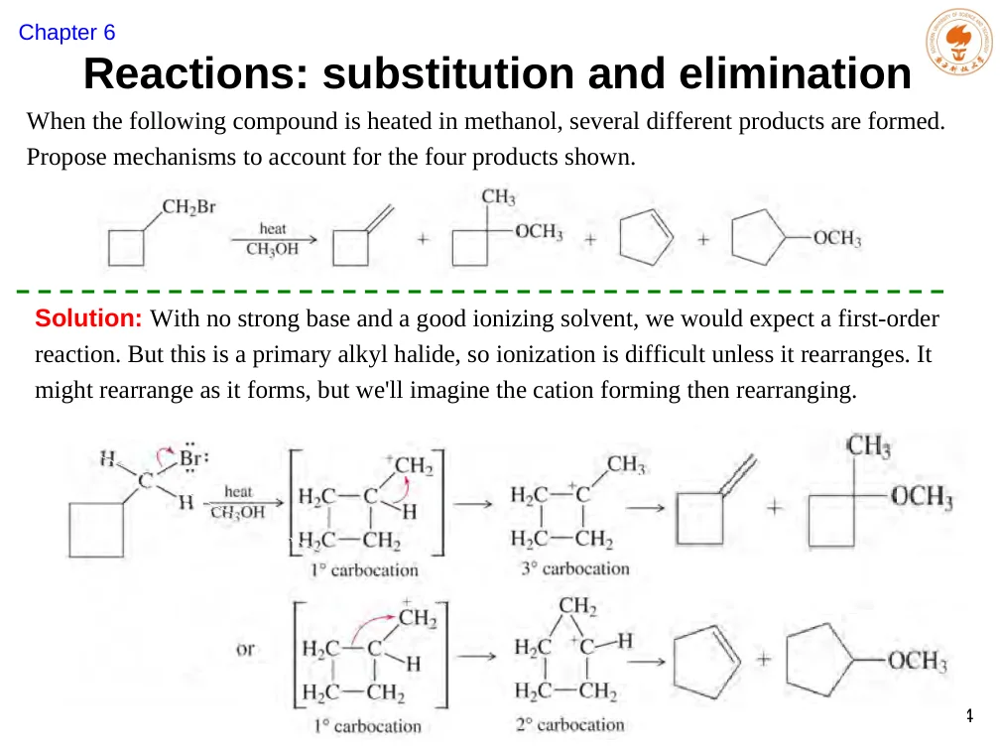
课件为展示电子流，分步画出伯正离子。实际电离可与邻键迁移耦合，减小形成高能伯正离子的代价。环扩张（ring expansion）同时涉及连接关系改变与张力变化；环己烷翻环只改构象，轴向与赤道向互换而连接关系保持。
甲基迁移例：局部稳定性与整体比例分开判断
3-碘-2,2-二甲基丁烷在AgNO₃/乙醇中，Ag⁺与I⁻形成AgI沉淀有助离去。银离子进入沉淀的计量过程可作为促进电离的驱动力。原仲正离子直接消除给A（3,3-二甲基-1-丁烯）；1,2-甲基迁移后，叔正离子消除可给B（2,3-二甲基-2-丁烯）和C（2,3-二甲基-1-丁烯）。
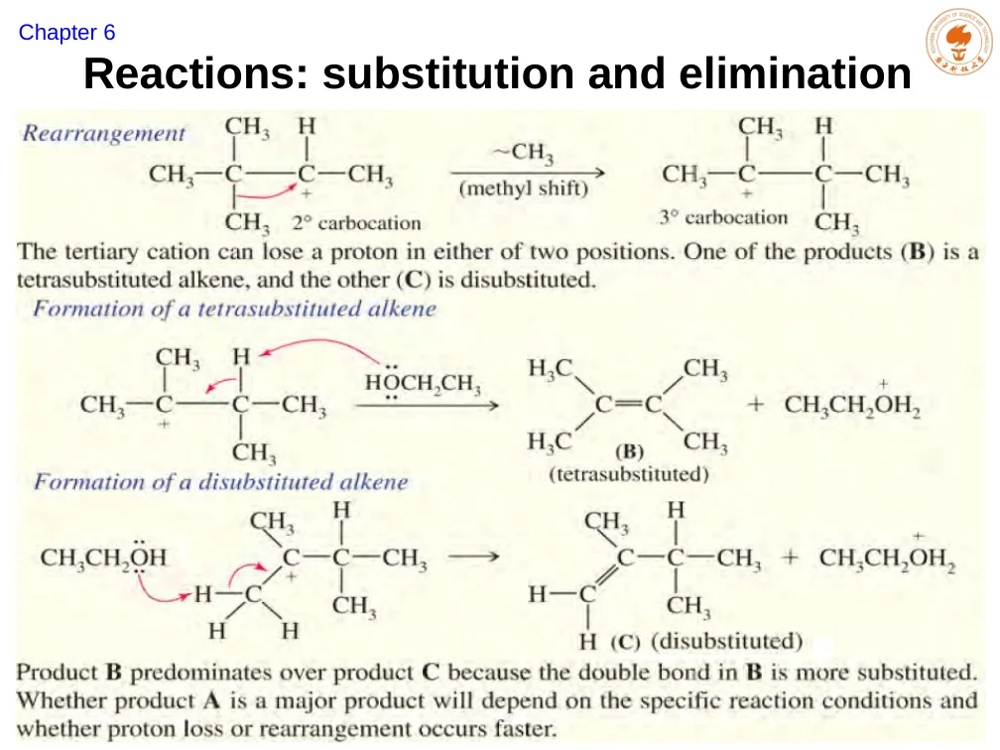
B是四取代烯烃，C是二取代烯烃，课件比较中B优于C。A与重排产物的总比例还取决于原正离子的去质子化速率与重排速率；完成这一比较需要相应条件或实验数据。
五、E2：三根箭头连成一个协同步骤
E2（bimolecular elimination，双分子消除）中，碱取β-H、C–H电子对形成C=C、C–X断裂同步进行。弯箭头按“B的孤对→H，Cβ–H键→Cα–Cβ之间，Cα–X键→X”连续画出。反应坐标上对应一个主要过渡态。
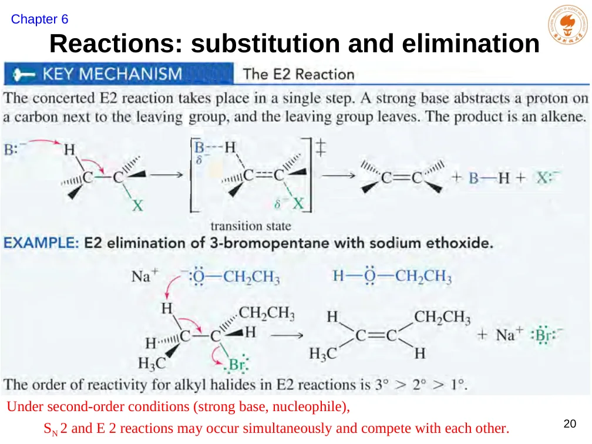
[B]为参与该步的有效碱浓度；kE2单位L·mol⁻¹·s⁻¹。其余条件固定时，[RX]加倍使速率加倍，[B]加倍也使速率加倍，两者同时加倍使速率变成4倍。强碱和可达的β-H有利于E2；叔底物背面取代受阻时，强碱常使E2占优势。
常见试剂包括HO⁻、MeO⁻、EtO⁻和体积较大的t-BuO⁻。同一烷氧负离子可同时表现亲核性与碱性；仲底物往往同时发生SN2与E2。E2的一步路径保持原碳骨架，产物连接关系可先直接从起始物枚举。
课件第21页给出的普通卤代烷E2反应性3°>2°>1°可作为可比系列的经验趋势。做具体题时还要检查双键形成的稳定化、碱位阻、离去基团和可用构象。
六、位置选择性：Zaitsev规则与适用条件
Zaitsev规则概括：许多常见脱卤化氢条件下，取代程度较高的烯烃为主要位置异构体。超共轭与烷基给电子效应有助稳定较多取代的双键。先按连接关系数取代基，再在同一连接方式内比较E/Z。
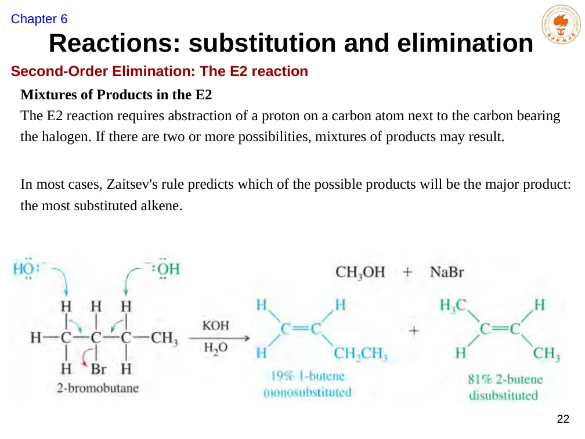
第22页图示条件为KOH/H₂O，给出的比例是1-丁烯19%、2-丁烯81%。位置异构体的比例为81:19，2-丁烯是主要产物。图中画出的2-丁烯为反式结构；精确的E/Z分配需另有数据。百分数沿用课件所列条件。
| 控制因素 | 观察结果 | 作答要点 |
|---|---|---|
| 小体积碱、普通可旋转底物 | 常见Zaitsev取向 | 更高取代的双键往往较多 |
| 大体积碱 | 较易接近的β-H可占优势 | 较少取代的Hofmann产物比例可能上升 |
| 刚性底物或环己烷椅式 | 空间可达性限制消除位置 | 先找满足几何要求的H/X组合 |
| 可形成共轭双键 | 共轭稳定化参与竞争 | 把共轭程度与取代程度一并比较 |
Hofmann产物在这里指较少取代的消除烯烃。选择性来自各条路径的活化自由能差；产物稳定性是常用判断线索，配合碱体积和几何条件使用。
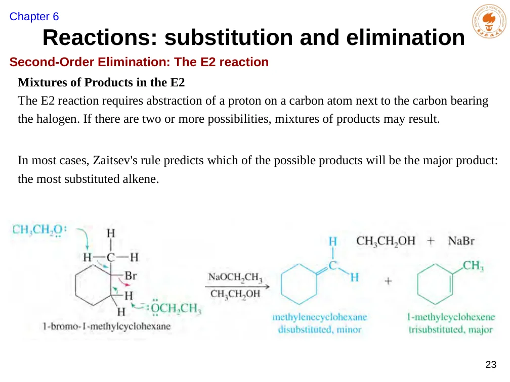
1-溴-1-甲基环己烷从环上β位消除给1-甲基环己烯（三取代）；从甲基β位消除给亚甲基环己烷（二取代）。该课件EtO⁻/乙醇例中，环内双键产物为主。
七、E2空间要求：反式共平面与顺式共平面
反式共平面（antiperiplanar）指Hβ–Cβ–Cα–X的二面角约180°。C–H与C–X位于同一平面两侧，轨道取向利于σ(C–H)、形成中的π体系和σ*(C–X)相互作用。在可自由旋转体系中，这一取向也常对应较低扭转能的交叉式构象。
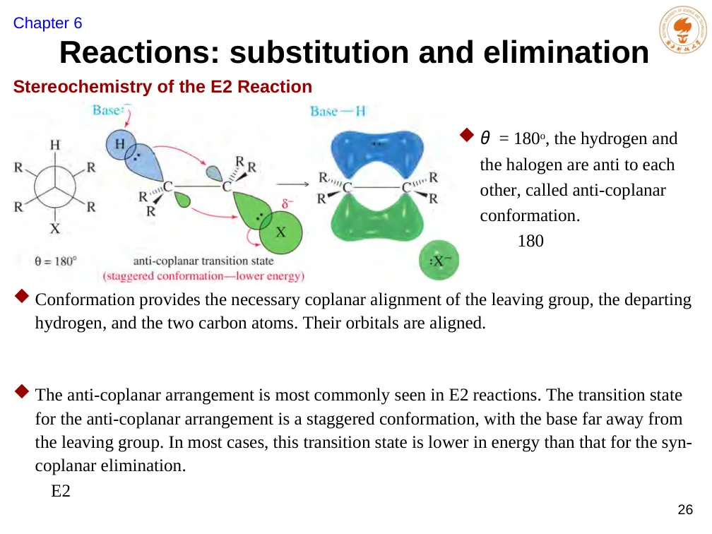
顺式共平面（synperiplanar）对应约0°，通常具有重叠式构象的扭转代价和较不利的相互作用。刚性骨架在限定几何条件下仍可发生syn消除。第28页以H/D标记说明可被夺取的原子由该骨架的几何关系选择；解释这张图的主线是空间可达性。
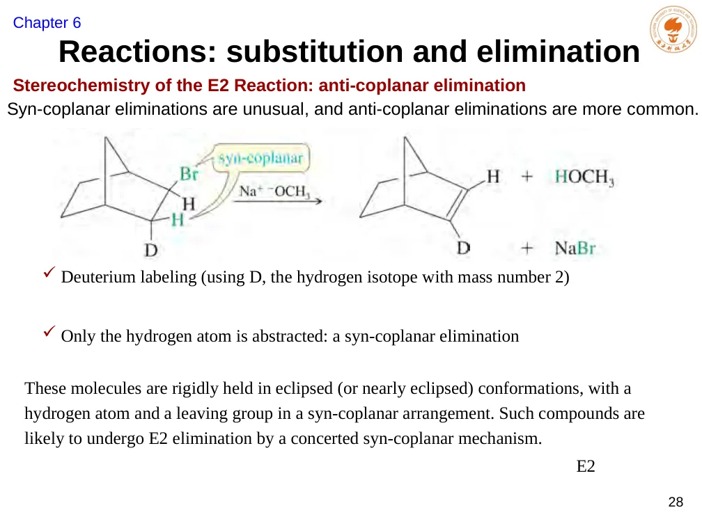
这里的anti/syn描述起始构象或过渡态中H与X的二面角；产物的E/Z描述烯烃两端高优先级基团的关系。答题时分别完成这两个判断。
八、立体专一性：把反应构象投影成烯烃
课件选用Ph–CH(Br)–CH(Ph)–CH₃的两个非对映体。以将成双键的C–C轴作Newman投影，转到H/Br反式共平面，再追踪剩余Ph、H与CH₃的位置。第一个给两Ph相反侧的产物；第二个给两Ph同侧的产物。
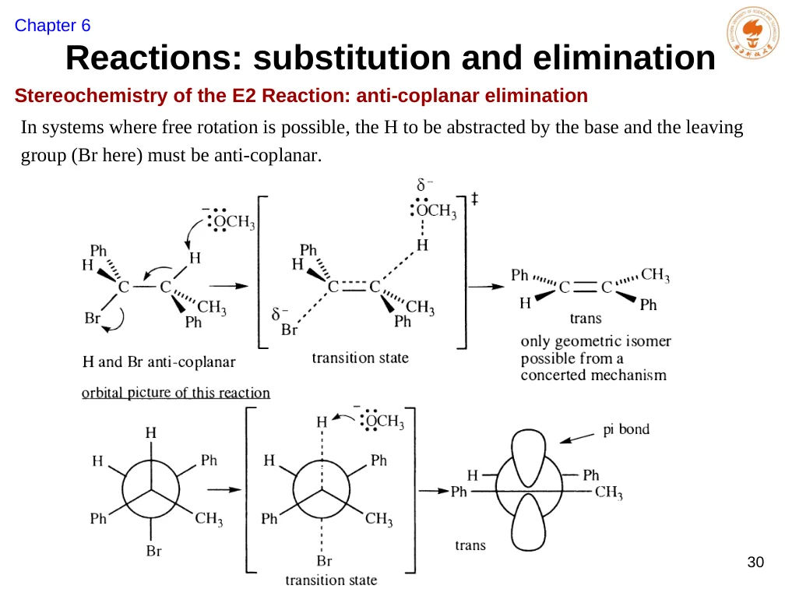
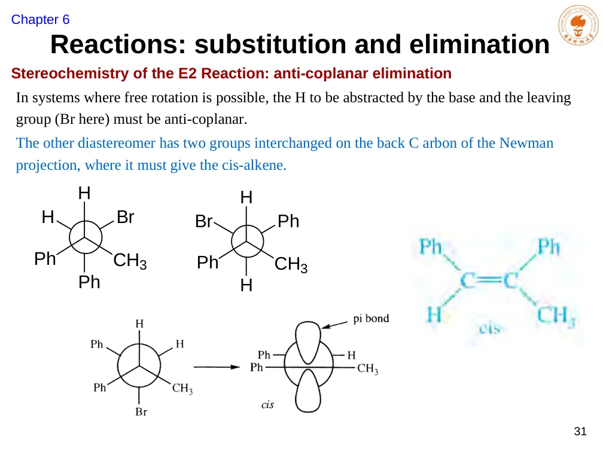
这对产物左端Ph优先于H；右端Ph优先于CH₃（按后续原子层比较，苯基胜出）。因此本例的Ph反式对应E，Ph顺式对应Z。操作顺序是固定碳链身份→画反应构象→追踪基团→重排CIP优先级→标E/Z。
立体专一性体现为起始物构型差异决定不同产物构型；立体选择性则比较同一底物能形成的多个产物中哪一种较多。E2题先筛选可消除的构象，再讨论该底物各构象的占比和各路径速率。
九、拓展：环己烷的反式二轴要求
把anti几何应用于环己烷椅式构象：相邻碳上轴向离去基团与反向轴向β-H形成所需近似共平面关系，称反式二轴消除（trans-diaxial elimination）。这是对本课一般anti原则的教材式推导。
- 画椅式，保留各取代基的up/down。
- 用翻环寻找离去基团处于轴向的构象。
- 检查两侧邻碳是否有反向轴向H。
- 仅在符合要求的位置间比较烯烃产物。
若一个邻碳的对应轴向位置已由其他取代基占据，该侧的β-H可达性随之改变。翻环将轴向与赤道向互换，up/down和连接关系保持；前面扩环例则重组C–C键。两类过程分别属于构象变化和骨架重排。
此式假定翻环远快于消除、仅一个构象有效、碱过量近似恒定。freactive为反应构象的平衡摩尔分数；kobs是表观一级常数。例：f=0.20，kE2=0.50 L·mol⁻¹·s⁻¹，[B]=0.10 mol·L⁻¹，则kobs=0.010 s⁻¹。少量反应构象也能参与反应，其占比进入观测速率。
十、四条路径竞争：结构、试剂、介质、温度
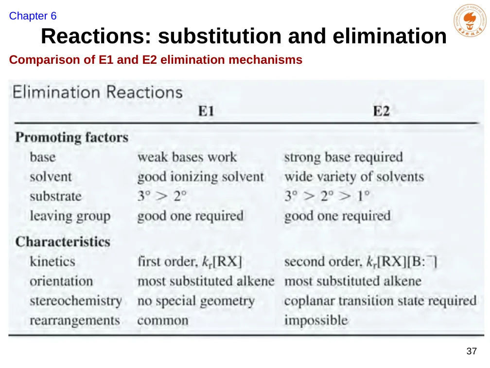
| 底物/条件 | 优先考虑 | 继续核对 |
|---|---|---|
| 甲基卤 + 合适亲核体 | SN2 | 普通β消除需要β碳与β-H |
| 普通伯卤 + 小体积强亲核体 | SN2常占优势 | 大体积强碱及可用β-H可提高E2 |
| 仲卤 + 强亲核/强碱 | SN2与E2竞争 | 亲核性、碱性、位阻、溶剂及温度 |
| 叔卤 + 强碱 | E2常占优势 | 可用β-H和几何要求 |
| 可电离底物 + 弱碱/弱亲核体 + 电离性介质 | SN1/E1共同中间体 | 捕获、去质子化与重排速率 |
| 烯丙基/苄基底物 | 结合共振单独分析 | 同查SN2通道与正离子稳定性 |
溶剂：E1对电离与离子稳定化敏感；E2的碱溶剂化、离子配对与有效浓度也受介质影响。温度：加热在许多体系中提高消除比例。严格比较看各分支的活化自由能ΔG‡=ΔH‡−TΔS‡；产物比例随两条路径速率常数的温度依赖改变。课件用生成粒子数和熵作直观说明，解题优先采用具体反应条件和竞争动力学。
证据组合：一级动力学、碳骨架重排和溶剂捕获支持离子化路径；二级动力学、强碱依赖和anti几何支持协同消除。SN1与E1可共享一级电离，SN2与E2可共享二级形式；确定产物类型与立体结果后，证据链才完整。
十一、课件综合例题：画全分支
例(a)：1-溴-1-甲基环己烷 + 热甲醇
叔底物在所示甲醇条件下先考虑电离。共同正离子有：①甲醇进攻→氧鎓离子→1-甲氧基-1-甲基环己烷；②从环上两个等价β碳失H→1-甲基环己烯，主要烯烃；③从甲基失H→亚甲基环己烷。环内烯烃取代程度较高。
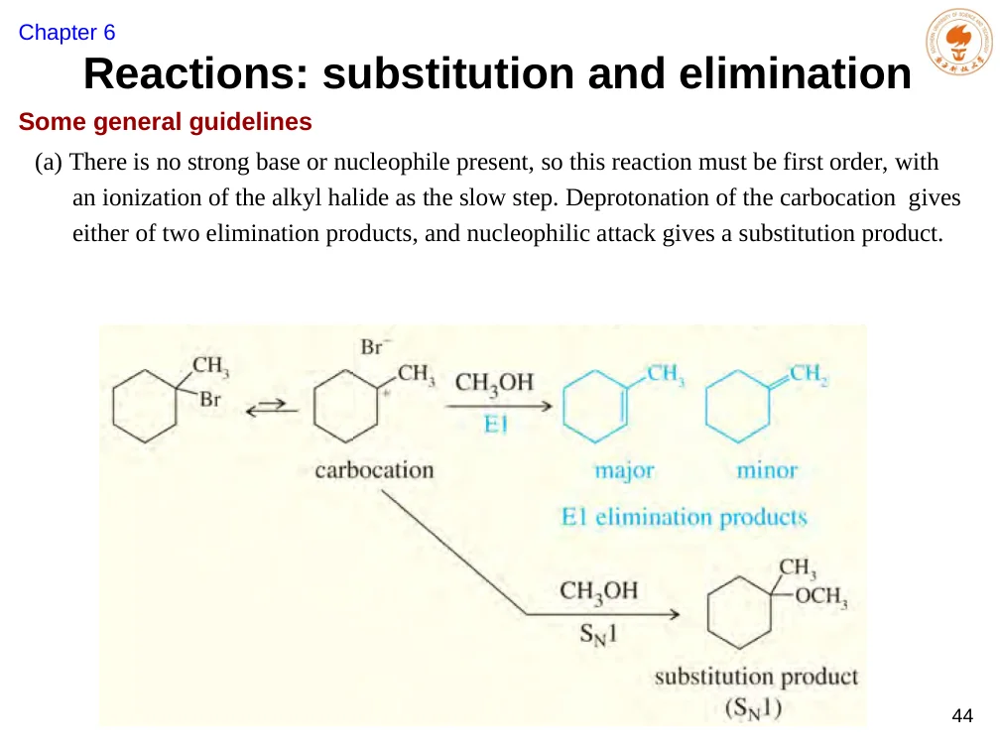
例(b)：2-溴己烷 + NaOMe/甲醇
仲底物遇强亲核且强碱性的MeO⁻，同时列SN2和E2。SN2给2-甲氧基己烷；E2从C1失H给1-己烯，从C3失H给2-己烯。课件将2-己烯列为主要烯烃；进一步区分E/Z时，普通条件下E通常更有利，准确比例按具体条件或实验数据。
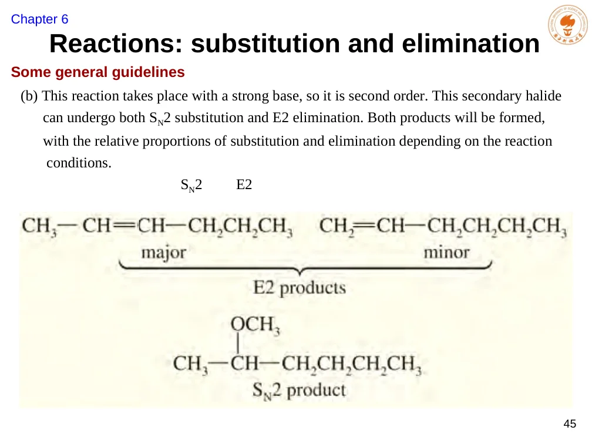
作答的完整结构包括：底物分类、试剂角色、每条路径的箭头、各产物连接关系、主要位置异构体及其判断理由。题目要求“所有产物”时，保留取代支路与少量消除支路。
十二、作业6-34与6-38：把溶剂和构型读准确
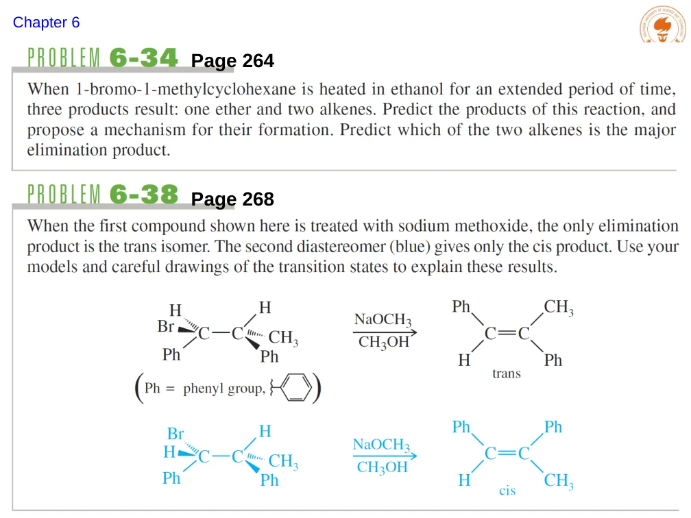
6-34（课件标注p.264）
1-溴-1-甲基环己烷在乙醇中长时间加热，三个所示类型的产物是：1-乙氧基-1-甲基环己烷、1-甲基环己烯、亚甲基环己烷。前两类步骤分别按SN1捕获/去质子化、E1去β-H画出，主要烯烃为1-甲基环己烯。这里的醚基来自乙醇；第44页例题用甲醇，因此相应例题产物为甲氧基。
6-38（课件标注p.268）
按第30、31页的操作，分别把两非对映体转成H/Br anti的Newman投影。保留前后碳上其他基团的相对位置，画出单个E2过渡态；消除后第一个底物给两Ph反式（E）烯烃，第二个给两Ph顺式（Z）烯烃。解释重点是起始构型经过固定反应几何映射到产物构型。
页码与题号沿用本PPT标注；第29页同类题图写7-25，第46页作业写6-38。复习时以本次附图结构识别题目。
十三、定量拓展：浓度怎样影响消除比例
设同一试剂Q既作亲核体又作碱，SN2与E2独立并行，并且在固定溶剂、温度下两条简单速率式均成立：
vE2vSN2=kEkS， fE2=kEkE+kS
kS与kE分别为两条二级路径的速率常数；fE2为仅有这两条路径时的消除分数。公共浓度项约去，因此把Q浓度加倍会同时加快两条路径，而此模型下比例保持。若kE=0.30、kS=0.10 L·mol⁻¹·s⁻¹，E2占75%。换碱、改温度或改变溶剂会改变速率常数，比例可随之变化。
若实验中另有一级电离支路，固定Q浓度时底物消耗可写kobs=kion+(kS+kE)[Q]。此时作kobs对[Q]图，截距反映一级通道，斜率是两条二级通道常数之和；再结合产物组成区分贡献。
十四、复习清单、课件校订与测验
考前七问：α/β标对了吗？每个β位有H吗？先电离还是协同？重排后重新编号了吗？anti构象可达吗？主要双键位置与E/Z分开了吗？溶剂参与成键时醚基写对了吗？
为什么E1与SN1常一起出现？
它们可共享电离形成的碳正离子。亲核捕获给取代，夺取β-H给消除；分流由各过程速率决定。
环己烷翻环怎样参与E2？
翻环提供轴向离去基团及相邻反向轴向H的构象。构象交换快时，反应构象占比进入观测速率。
AgNO₃在本课的作用怎样表述？
Ag⁺结合离去的卤离子，形成难溶AgX，为电离提供驱动力。按银盐是否计量消耗来描述其角色。
集中校订
- 第28页标题沿用anti字样，正文和刚性骨架例实际讲syn消除，本页按图与正文说明。
- 第39页英文high temperatures对应“高温”，中文“高压”按翻译笔误处理。
- 第22页试剂写KOH/H₂O，图中副产物文字写CH₃OH/NaBr，按离子与元素守恒应写H₂O/KBr。第33页溶剂影响、第42页熵解释按“竞争”节补充适用条件；第17页B/C比较与A/重排支路竞争分开陈述。
依据本次上传的46页课件整理。环己烷反式二轴与速率分流计算为基于课内原理的拓展，模型条件已在相应位置说明。